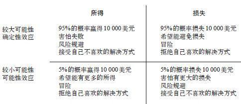

聪明的投资者不会每天都看股票行情表
保罗·萨缪尔森是20世纪著名的经济学家。他曾问过他的某个朋友是否愿意玩一个抛硬币的游戏，玩这个游戏可能会损失100美元，也可能会获得200美元。他的朋友答道：“我不会接受，因为我觉得获得200美元的满足感无法抵消我损失100美元的痛苦。但如果你保证将硬币抛100次的话，我就和你玩这个游戏。“除非你是决策理论家，否则，你就不会有萨缪尔森的朋友的那种直觉：反复打一个有趣却也有风险的赌可以降低主观风险。萨缪尔森觉得他朋友的回答很有意思，便继续进行分析。他证明，在一些特定情况下，最注重效用的人拒绝了一次赌局，也会拒绝多次。
值得注意的是，萨缪尔森的证明虽然是有效的，但这个证明引出的结论却有违常识—打100次赌当然是个吸引人的提议，心智正常的人都不会拒绝—可他本人似乎并没有意识到这个事实。马修·拉宾（Matthew Rabin）和理查德·泰勒指出，“在100个赌局中，输100美元和得200美元的比率是50 ∶50，因此，期望回报是5 000美元。另外，只有1/2 300的概率会输钱，会输掉超过1 000美元的钱的概率仅为1/62 000“。当然，他们想要说明的是，如果效用理论在任何情况下都与如此愚蠢的偏好相一致的话，这个理性选择模式肯定出什么问题了。拉宾对一些小额赌注严重的规避损失做法的荒谬结果进行了证明，但萨缪尔森没有看到这些证明，即便他看到过也不会感到惊讶。他甚至很愿意考虑很有可能被理性的人拒绝的交易的发生概率，这一意愿证实了理性模式的强大影响力。
假设用非常简单的价值函数来描述萨缪尔森的朋友（我们称之为山姆）的偏好。为了表明自己规避损失的程度，山姆首先改变了赌注，将亏损金额改为原来的2倍。然后，他开始计算这个改变后的赌局的预期值。下面是他抛一次、两次、三次硬币的结果。做这些工作肯定需要极为专注。

从上表中可以得知，这个赌注的预期值是50。然而第一次掷硬币对山姆来说毫无价值，因为他感到输掉1美元的痛苦程度是赢得1美元的满足程度的2倍。改变赌注来体现自己的损失厌恶之后，山姆就会发现这个赌局的价值为零。
现在，请考虑抛两次硬币的情况。输钱的概率降低到25%。两个极端结果（损失200美元或赢得400美元）在价值上相互抵消，它们的概率相同，且输的痛苦程度是赢的满足程度的2倍。但中间结果（一次输，一次赢）是积极的，所以抛两次硬币可以视为赌一次。现在，你就能看到窄框架的成本和多次打赌的奇妙之处了。当山姆分开来看的时候，就会认为它们毫无价值。如果在不同的场合中分别问他是否愿意打这两个赌，他都会拒绝。然而，当它们同时出现时，它们的共同价值就是50美元！
若抛3次硬币的话，这个赌局就更有利了。极端结果仍然相互抵消，而且也不那么重要了。第三次抛硬币，尽管单独来看没什么价值，但却为整个赌注增加了62.5美元的价值。当山姆打的赌变为抛5次硬币时，这个赌局的期望价值就会是250美元，而山姆输钱的可能性是18.75%，他的现金等价物是203.125美元。这个例子中值得注意的一点是山姆的损失厌恶度从未改变过。然而，随着抛硬币次数的增多，输的可能性很快就降低了，损失厌恶对其偏好的影响也就相应减弱了。
现在，如果山姆拒绝只赌一次的话，我已经准备好了一套说辞。如果你和山姆一样，也有不合理的损失厌恶的话，这套说辞也同样适用于你：
我理解你对赌输的反感情绪，但这种情绪会让你损失很多钱。请考虑一下这个问题：你已经活不长了吗？这是你这辈子需要考虑的最后一个小赌注吗？当然，你不太可能再碰到和这个完全一样的赌局，但你会有很多机会碰到吸引人但赌注相对你的财产来说很小的赌局。如果你能将这些赌局看做一个整体的一部分，并重复念咒语：有赚有赔。这样，你在经济上就会更理性，也能在无形中帮自己赚到一大笔钱。那句咒语的主要目的是在你输的时候帮助你控制你的情感反应。如果你相信自己这样做是有效的，在你在决定是否该承担某个有正面预期值的小风险时，就应该用这句咒语提醒自己。在说这句咒语时，还需记住以下几个条件：
·当所有赌局都真正相互独立时，它才适用；它不适用于同一行业的多种投资，因为这些投资可能会同时遭遇失败。
·只有在可能的损失不会使你的全部资产处于危险时它才有效。如果你不想某一次损失成为影响你经济前景的重要阻碍的话，就请注意！
·若一个赌局中每次下注赢的可能性都非常小，就不该将咒语用在这个风险大的赌注上。
如果你有这条规则所要求的情绪戒律，就永远不会孤立地考虑一个小的赌注，或是在小的赌注上规避损失，直到你快要进入棺材的那一刻（或许在那个时候还是不会这样做）。
遵循这条建议不是没有可能的。金融市场中有经验的交易者每天都以此建议为生，他们通过宽框架来减轻亏损带来的痛苦。正如书中已提及的那样，我们知道可以通过引导受试者“像商人那样思考”，使他们不去规避损失，这就正如有经验的棒球卡商人不会像新手那样受到禀赋效应的影响一样。学生在不同的指导下可能会做出有风险的决策（接受或拒绝他们有可能会输掉的赌局）。在窄框架的情况下，他们被告知在做决策时应该“将每一个决策都当做你唯一需要做的决策”，并且要体会这些决策带给自己的情绪反应。在宽框架的情况下做决策的建议，包括“将自己想象为商人”，“你总是做这样的事”，以及“将它看做众多财政决策中的一个，这样一个决策会在将来一起被并入‘证券投资组合’中”。实验者通过心理学方法评估了受试者对盈与亏的情绪反应，方法包括测谎时用的测试皮肤电导率等。正如人们期望的那样，宽框架缓解了人们对损失的情绪反应，增强了他们承担风险的意愿。
损失厌恶和窄框架的结合是一个代价更大的祸端。个人投资者可以通过降低查看自己投资结果的频率来避免这一祸端，并在获得宽框架带来的情感收益的同时节约时间、减轻痛苦。时刻关注每日的经济波动是种亏本的对策，因为频繁的低额损失带来的痛苦比同样频率的低额收益带来的快乐程度更为强烈。一个季度查看一次就足够了，对于个人投资者来说，这样的频率还要高一些。刻意避免查看短期结果，除了可使投资者的心情更为愉快以外，还可以提升决策和结果的品质。对坏消息典型的短期反应就是加剧损失厌恶。查看总体反馈的投资者很少能得到类似的坏消息，就更有可能不规避损失，结果也会赚得更多。如果你不知道每只股票每天（每周甚至每月）的情况，也就不会对你的证券投资组合进行无效的变动。在几个周期内都不改变某个投资的承诺（“锁定”投资的相同说法）可以改善财务状况。